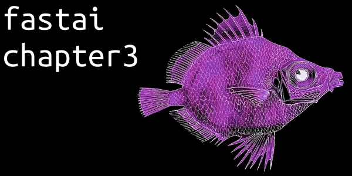

Intro
This my summary of chapter 3 from the book “Deep Learning for Coders with fastai & PyTorch”.
- questions - question about the chapter
- key concepts - summarized key concepts of the chapter
- Homepage: fastai hompage
- Online Book: fastai online book
- Author: jermey howard
- Author: sylvain gugger
- Co-Author of this chapter: rachel thomas
Questions
Questions about the chapter.
Code
No code for this chapter.
Key Concepts
Summarized key concepts ot this chapter.
Why do Data Ethics Matter
Everybody who is training models needs to consider how their models will be used, and consider how to best ensure that they are used as positively as possible. There are things you can do. And if you don’t do them things can go pretty badly. In general there are many negative societal consequences linked to AI an machine learning being observed today (bugs, flawed feedback loops, biases). It’not just a moral burden to consider sometimes there a legal burdens also. As example the first person who was jailed in the Volkswagen diesel scandal was the engineer not the manager. There is no final solution to ensure your work is used the right way. But with the right questions, you can at the very least ensure that the right issues are being considered. And you can so “no” to questionable pieces of work if their moral aspects don’t align.
Topics in Data Ethics
Data ethics is a big field. This summery doesn’t cover everything. The following are relevant topics to consider:
Recourse and Accountability
In a complex system, it is easy for no one person to feel responsible for outcomes. While this understandable, it does not lead to good results. To hinder big errors you need Recourse and Accountability. An additional reason why recourse is so necessary is that data often contains errors. Mechanism for audits and error correction are crucial and should be considered by by practitioners.
Feedback Loops
Feedback loops describe how an algorithm can interact with its environment to make predictions that reinforce action taken in the real world, which lead to predictions even more pronounced in the sam direction. Part of this problem is the driving metric of the algorithm. An algorithm has a metric to optimize, it will do everything it can to optimize their result. This can lead to all kinds of edge cases, and humans interacting with a system will search for, find, and exploit thees edge cases and feedback loops for their advantage. This behavior of feedback loops and tendencies for optimization can happen. As practitioner you should keep that in your mind and either anticipate a feedback loop and take positive action to break it when it happens.
Bias
Bias in machine learning can come from multiple sources. In this section we summarize the types of bias that are most helpful for machine learning projects.
- Historical bias
- Historical bias comes from the fact that people are biased, processes are biased, and society is biased. It is fundamental, structural issue with the first step of the data generation process and can exit even give perfect sampling and feature selection.
- Measurement bias
- Measurement bias can occur when our model makes mistakes because we are measuring the wrong thing, or measuring it in the wrong way, or incorporating that measurement into the model inappropriately.
- Aggregation bias
- Aggregation bias occurs when models do not aggregate data in a way that incorporates all of the appropriate factors, or when a model does not include the necessary interaction terms, nonlinearities, or so froth.
- Representation bias
- When the model emphasize some property of the data as it seemingly has the closet correlation with the prediction, even though that might not be the truth.
- Evaluation bias
- Evaluation bias occurs when the benchmark data used for a particular task does not represent the use population. A model is optimized on its training data, but its quality is often measured on benchmarks. These benchmark encourages the development and deployment of models that perform well only on the subset of the data represented by the benchmark data.
- Deployment bias
- Deployment bias arises when there is a mismatch between the problem a model is intended to solve and the way in which it is actually used. This often occurs when a system is built an evaluated as if were fully autonomous, while in reality, it operates in a complicated sociotechnical system moderated by human decision-makers.
Addressing different types of bias
Different types of bias require different approaches for mitigation. All datasets contain bias. There is no such thing as a complete debiased dataset. Many researchers in the field have been converging on a set of proposals to enable better documentation of the decisions, context, and specifics about how and why a particular dataset was created, what scenarios it is appropriate to use in, and what the limitations are. This way, those using a particular dataset will not be caught off guard by its biases and limitations.
Consider these points when working with machine learning algorithms:
- Machines learning can create feedback loops
- Small amounts of bias can rapidly increase exponentially because of feedback loops.
- Machine learning can amplify bias
- Human bias can lead to larger amounts of machine learning bias.
- Algorithms and humans are used differently
- Human decisions makers and algorithmic decision makers are not used in a plug-and-play interchangeable way in practice. These examples are given in the list on the next page.
- Technology is power
- And with that comes responsibility.
Disinformation
Disinformation is not necessarily about getting someone to believe something false, but rather often used to sow disharmony and uncertainty, and to get people to give up on seeking the truth. Is can often contain some seeds of truth, of half-truth taken out of context.
With machine learning disinformation can be created cheaper and at a larger scale. Trough autogenerated text machine learning can be used to create coordinated campaigns of inauthentic behavior. For instance, fraudulent accounts may try to make it seem like many people hold a particular viewpoint.
Addressing Ethical Issues
The issues raised within data ethics are often complex and interdisciplinary, but it is crucial that we work to address them. So what can we do?
Analyze a Project You Are Working On
- Consider the ethical implication of your work. Question to ask?
- Should we even be doing this?
- What bias is in the data?
- Can the code and data be audited?
- What processes are in place to handle appeals or mistakes?
Processes to Implement
- Concrete practices to implement to proactively search for ethical risks.
- Expanding the ethical circle to include the perspectives of a variety of stakeholder.
- Consult interests, desires, skills, experiences, and values that maybe were simply assumed.
- Consider all stakeholders and their interests. Also the individuals that will be indirectly affected by our products.
- Also consider terrible people. Who might use this product in ways we didn’t expected.
The Power of Diversity
- When everybody on a team has similar backgrounds, they are likely to have similar blind spots around ethical risks. Diversity can lead to problems being identified earlier, and a wider range of solutions being considered.
Fairness, Accountability, and Transparency
- Treat fairness as a central concern rather than an afterthought. Don’t sidestep deeper questions about fairness, accountability and transparency.
Regulation, Rights and Policy
- Policies are an appropriate tool for addressing data ethics issues when is likely that design fixes, self regulation and technical approaches to addressing problems, involving ethical uses of Machine Learning are not working. While such measures can be useful, they will not be sufficient to address the underlying problems that have led to our current state. For example, as long as it is incredibly profitable to create addictive technology, companies will continue to do so, regardless of whether this has the side effect of promoting conspiracy theories and polluting our information ecosystem. While individual designers may try to tweak product designs, we will not see substantial changes until the underlying profit incentives changes. Because of the above it is almost certain that policies will have to be created by government to address these issues.